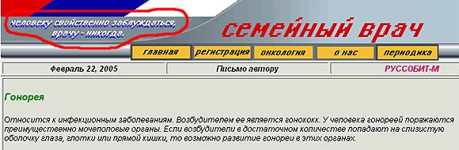

Рекомендации по лечению гонореи на русскоязычных сайтах.
Что важно для тех, кто пишет? Чтобы читали, конечно! Популярность не только приятна, она приносит прибыль. Больше читателей - больше прибыли. Все просто! Интернет в этом смысле идеален: не надо платить за печать книг, гонорар автору выплачивать - все виртуально, автор же в большинстве случаев неопределённый. Нужно только привлечь читателя, причём не просто какого-нибудь, а непременно массового. Насилие, спорт и секс, по свидетельствам психологов, для этой цели подходят лучше всего.
Медицинский сайт тоже, разумеется, должен быть популярным - для широкого круга лиц, интересующихся здоровьем. Про диету там, про биодобавки. Только это все в основном для женщин. А что для мужчин? Ну, не насилие же со спортом. Насилием, чего гляди, отпугнешь, а спортсмены и болельщики - народ в основном здоровый.
Секс - вот штука увлекательная безотносительно к полу и возрасту! К примеру, венерические болезни: все интересно - и как заражаются, и как лечатся. Хорошая идея, спрос обеспечен! Вот только один момент щекотливый: как быть с информацией о лечении? Хорошо ли её делать общедоступной?
- А что такого? Свободный человек вправе знать всё о своём здоровье!
- Да, но плохо, когда медицинский сайт способствует самолечению. Кроме того, можно воспитать у людей легкомысленное отношение к последствиям случайных связей. Заболел - обратился в Интернет за советом по лечению, и всё. Никаких мучительных посещений кожвендиспансера, связанных с этим объяснений, угрызений совести и проч. Приятно заразился - немного поболел - быстро выздоровел и… с лёгкостью повторил все сначала!
- Нет, самолечение никто не пропагандирует, никто ведь не говорит: «Не ходите к врачу, лечитесь дома». Просто помещаем информацию о том, как лечиться, и всё. И почему это «немного поболел - быстро вылечился»?! Уж пусть болеет, так болеет, и чтобы обязательно с осложнениями! Именно! А ещё лучше вот как: приглушить болезнь, чтобы не замечал и…
- Постойте, о чём это вы?!
- А вот о чем! Кто нас обязывает помещать информацию об эффективном лечении? Полную ахинею писать, конечно, не стоит (мало ли кто прочитает!), а так, что-нибудь похожее на правду. Лучше всего - из какого-нибудь древнего медицинского справочника, потом и сослаться можно, если что!
Итак…
Полечим гонорею!
Основным симптомом гонореи является выделение гноя из мочеиспускательного канала. Если вы не знаете, что такое гной, забыли, где находится мочеиспускательный канал, или затрудняетесь представить эти объекты вместе, обратитесь на сайт «Виртуальный доктор», созданный Азербайджанской ассоциацией студентов-медиков. Помещённый там (с обучающей, очевидно, целью) откровенный фотоснимок поражённого органа компенсирует недостатки самого бедного воображения.
Гонорея передается половым путём. Так обычно пишут, полагая, что заинтересовавшийся гонореей человек уже имеет представление об особенностях этого пути. Однако, истинно научная медицина не допускает разночтений, требуя единства в понимании терминов. Следуя этому принципу, автор статьи про гонорею на сайте программы «Здоровье с Еленой Малышевой» приводит подробное описание способов передачи венерической болезни.
Далее детализируются отдельные моменты половой жизни, ведущие к появлению боли в горле и «неприятных ощущений» в «области прямой кишки».
Статья написана мастерски. Читая про ужасы гонорейных осложнений, живо представляешь себе бледное лицо какого-нибудь бедняги, нашедшего у себя описанные симптомы и содрогающегося при мысли о пережитом. В этот момент он уже готов проследовать в кожвендиспансер.
Сдаётся, автор статьи пленён обаянием древнейшей венерической болезни. Поэтому, наверное, глава «Лечение» написана им, не желающим расставаться с музой, без особого энтузиазма. Антибактериальная терапия занимает последнее место в ряду прописанных им рекомендаций, разделяя свою незавидную участь с симптоматической.
Наверное, автор намеренно утаил дозы и способ применения названных им препаратов, не желая никоим образом потворствовать самолечению. Однако редакция сайта «Здоровье с Еленой Малышевой» взяла на себя смелость не только восполнить упущенные им подробности, связанные с использованием лекарств, но и расширить их перечень. Вот результат кропотливой работы - список, состоящий из 29 препаратов. Указав «мышью» на их названия, интересующийся найдёт информацию о способе употребления и дозах.
Среди этих 29 препаратов ни один не входит в современные схемы лечения гонореи. Часть не применялись при ней никогда: противотуберкулёзные средства - стрептомицин-хлоркальциевый комплекс, пасомицин и применяющийся при неспецифическом язвенном колите салазодиметоксин. Многие лекарства устарели, некоторые из них (цефалоридин) уже сняты с производства.
Эффективность рекомендуемых препаратов ограничивается устойчивостью возбудителя гонореи к антибиотикам. Согласно рекомендациям ВОЗ, если уровень резистентности гонококка к антибактериальному препарату в регионе превышает 5%, лекарство не может рутинно применяться для эмпирической терапии гонореи. В России к 1998 г. уровень устойчивости гонококков к пенициллинам (к бензилпенициллину, ампициллину, бициллинам) составлял 78%, а к тетрациклиновым антибиотикам (тетрациклину и доксициклину) - 96%.
Об этом написано, например, в рекомендациях «Антибактериальная терапия гонореи в свете последних международных рекомендаций» (А.А. Кубанова, С.В. Сехин, С.Б. Якушин, А.А. Кубанов), вышедших в 2002 году. В статье изложены современные международные рекомендации по лечению гонореи, сопровождающиеся комментариями специалистов Центрального научно-исследовательского кожно-венерологического института МЗ РФ и НИИ антимикробной химиотерапии. Среди рекомендуемых препаратов, прежде всего, характеризующийся 100%-й эффективностью цефалоспорин III поколения цефтриаксон и фторхинолоны, главным образом - ципрофлоксацин. Как нетрудно заметить, эти лекарства в списке рекомендованных на сайте www.zdorovie-tv.ru для лечения больных гонореей не значатся.
Тем не менее, нужно отметить, что при исследовании 213 клинических штаммов гонококков, выделенных в 2002-2003 гг. в Смоленске и Москве, 34,7% штаммов были нечувствительными к ципрофлоксацину (3,3% штаммов проявляли умеренную резистентность, а 31,4% - были резистентны) (Stratchounski L.S., Sekhin S.V., Voznesensky D.L., Pimkina Y.S., Edelstein M.V. Dramatic rise of resistance to fluoroquinolones in Neisseria gonorrhoeae in Central Russia. Proceedings of the 44th Interscience Conference on Antimicrobial Agents and Chemotherapy; 2004 Oct 30 - Nov 2; Washington, DC, USA; p. 125, abst. C2-1887). В связи с указанными выше фактами, фторхинолоны не могут использоваться в качестве препаратов эмпирической терапии гонореи в Центральной части России.
Но этот сайт не единственный, ведущий просветительскую работу по вопросам лечения гонореи среди широких слоев населения. Трудно переоценить ту помощь, которую оказывает больным сайт «Life for you - Все для здорового образа жизни»
Специалистами этого сайта скрупулезно отобрано и безвозмездно представлено на всеобщее обозрение более 50 наименований препаратов. Только их огромное количество позволяет предположить, что принимать препараты нужно не все вместе и не последовательно, хотя они следуют единым списком друг за другом, а какое-нибудь одно лекарство из предложенных. Какое же именно? Об этом обычно судят по последовательности изложения препаратов. У авторов эта последовательность строго логическая - по алфавиту.
На поверку оказывается, что столь рекордное количество препаратов явилось результатом перечисления торговых названий одних и тех же лекарственных веществ. Так, например, бассадо, доксал, доксилан и юнидокс-солютаб - выпускаемый разными фармацевтическими компаниями доксициклин. Зинацеф, кетоцеф и новоцеф - это один и тот же цефуроксим. Норфлоксацин фигурирует в списке под 3-мя названиями, ципрофлоксацин - под 6-ю и т.д. Между тем, способ употребления и дозы во всех случаях указаны разные.
На сайте «Медицинский центр - справочная информация, статьи, рефераты» классификация антимикробных препаратов в большей степени удовлетворяет критериям классической фармакологии, однако рекомендации по их применению грешат теми же недостатками. Например, про пенициллины сказано, что «препараты данной группы являются основными антибиотиками для лечения гонореи, остальные - антибиотиками резерва». Но авторы готовы к трудностям: после «безуспешной пенициллинотерапии» они рекомендуют сульфаниламиды (сульфамонометоксин и сульфадиметоксин). В перечне фигурируют такие абсолютно неуместные антибиотики, как канамицин и левомицетин, описанию применения которых при гонорее уделено во много раз больше места, чем, например, цефтриаксону.
Препараты эти достаточно токсичны, но надо потерпеть. Ведь так считает врач-консультант из Интернета, а он, по мнению сайта «Семейный доктор», должен всё знать и никогда не допускать ошибок.

Таким образом, по безупречности принимаемых решений врач оставляет позади себя даже сапёра, который, согласно известному афоризму, хоть раз, да ошибается. Только вот неопытный сапёр рискует, прежде всего, своей жизнью, а врач, уверенный в своей непогрешимости, - жизнью и здоровьем своих пациентов.
Популяризация медицинских знаний - деятельность вовсе не зазорная, но требующая не меньшего профессионализма и ответственности, чем информирование специалистов-медиков. Принципиальное значение при этом имеет тщательный отбор материала и грамотная его подача. В качестве примера можно привести изданную еще в 1981 г. «Популярную медицинскую энциклопедию» под редакцией академика Б.В. Петровского. В ней, в частности, имеется статья про гонорею, в которой даётся совет при первых признаках заболевания обратиться к врачу.
Такой совет, высказанный напрямую, сейчас, учитывая растущую уверенность населения в собственных знаниях по медицине, может показаться наивным. И всё же, если сам пишущий уверен в справедливости этого принципа, то, адаптируя медицинскую информацию, он не должен способствовать распространению самолечения. Тем более, когда в результате такого самолечения вред может быть нанесён не только отдельной личности, но и обществу в целом.
Антон Лысенко, к.м.н.